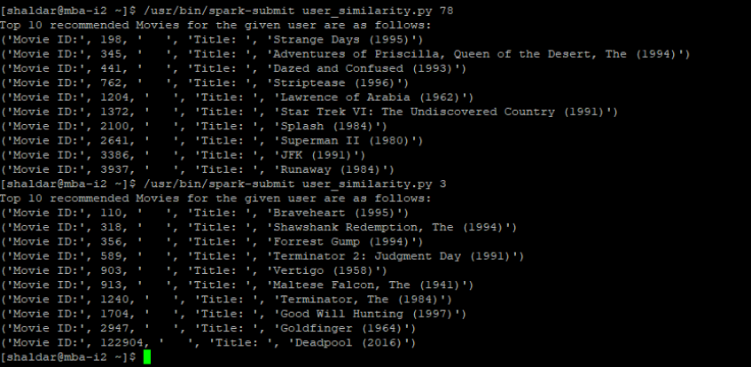

Movie Recommendation System
Team
Noor Zahara
Riddhi Patil
Sharmistha Haldar
Introduction
With this project we aim to provide the movie recommendation for the user based on the movies liked by similar users. Also, we provide the movie rating for the searched movie based on the reviews provided by users on popular movie review websites such as IMDB and Tumblr.
For this project we plan to use the movie dataset (more information in the next section), preprocess the dataset to remove any abnormality or outliers. For the movie searched by the user we will make a hit to reviews page on IMDB for that particular movie to fetch the reviews of that particular movie from the above mentioned movie review websites. After redirecting to the review pages of that particular movie, perform web scraping to get the review content and stored it in a file against the movie id.
Next, we will analyse the Sentiment for the review by using the words in the review text. We will rate the word as per its meaning from +5 (positive review) to -5 (negative review) using the dictionary AFINN. The AFINN is a dictionary which consists of 2500 words which are rated from +5 to -5 depending on their meaning. We will be using the dictionary from the following link: AFINN-111.txt. Once the sentiment analysis is performed, we will average the rating of words per review to determine if the review is negative or positive and assign appropriate “stars” from the range 0 to 5. For negative average rating we will assign 1 star.
Next we implement Collaborative filtering to display the list the top rated movies for particular user whose movie likings are similar to other users. We used cosine similarity matrix to determine the similar users based on the ratings given by the users to the movies.
Recommendation techniques – Content, Collaborative and Hybrid models
Java Web services APIs to pull information from external sources
Spark - Python .
Sentiment Analysis using Java
Dataset Details
We will be using the datasets available on the website https://grouplens.org/datasets/movielens/
the data is collected from the MovieLens website (http://movielens.org). The dataset comprises of three parts:
ratings.csv: Each line of this file after the header row represents one rating of one movie by one user, and has the following format:
userId,movieId,rating,timestamp
In our prototype recommendation engine we are ignoring timestamp from ratings.csv
movies.csv: Structure of movies.csv is as follows:
tmdbMovieID, Movie Name and Year, Generes in | separated format. Each movie can contain one or more genres of the following genres:
If no genres are available then genre will be 20. (no genres listed)
Currently the system doesn’t use the Year information.
links.csv: Contains the identifiers that can be used to link to other sources of movie data are contained in the file `links.csv`. Each line of this file after the header row represents one movie, and has the following format:
movieId,imdbId,tmdbId
Currently the system doesn’t use tags.csv file.
Algorithms and Techniques Used
Collaborative Filtering based Recommendation - For each user, recommender systems recommend items based on how similar users liked the item. Let’s say Alice and Bob have similar interests in video games. Alice recently played and enjoyed the game Legend of Zelda: Breath of the Wild. Bob has not played this game, but because the system has learned that Alice and Bob have similar tastes, it recommends this game to Bob. In addition to user similarity, recommender systems can also perform collaborative filtering using item similarity (“Users who liked this item also liked X”). The idea behind collaborative filtering is to recommend new items based on the similarity of users. Cosine similarity is used to measure the similarity between users.
Algorithm (Neighborhood similarity) - We have calculated the user similarity based on the neighbourhood technique and used the matrix factorization technique(SVD) to predict the missing values for user-movie ratings. Using cosine similarity we create a user to user similarity matrix. To recommending movies for a given user we look at user to user similarity matrix and extract top 5 similar users. Using the user’s id we get all the movies rated by those top users and multiply the rating with the similarity value. We then sort the movies based on new ratings and recommend top 10 movies.
Frameworks used
Hadoop - Apache Hadoop is a collection of open-source software utilities that facilitate using a network of many computers to solve problems involving massive amounts of data and computation. It provides a software framework for distributed storage and processing of big data using the MapReduce programming model
Spark - Apache Spark is an open-source distributed general-purpose cluster-computing framework. Spark provides an interface for programming entire clusters with implicit data parallelism and fault tolerance.
External Libraries Used
Jsoup-1.12.1.jar - Jsoup is a java html parser. It is a java library that is used to parse HTML document. Jsoup provides api to extract and manipulate data from URL or HTML file. It uses DOM, CSS and Jquery-like methods for extracting and manipulating file. We used this jar for web scraping to get the reviews from IMDB website.
Scipy.sparse.linalg.svds - This library consists of an iterative procedure to find the SVD decomposition by reducing the problem to an eigendecomposition on the array. This method is very effective when the input matrix is sparse or only the largest singular values are required.
Project Context
The purpose of choosing this project is to get an insight about recommendation engine in general. Through this course of implementation we intend to get hands on experience with web crawling, link analysis and also working as a team. We find this system really interesting since it helps users make their decision and also enforce more research on products they plan to buy and also feel satisfied after a decision is made. It also helps record the quality of interactions between users and items. Recommender systems differ in the way they analyze the data sources to develop notions of affinity between users and items, which can be used to identify well-matched pairs.
Performance Evaluation
Sentiment analysis for reviews:
We were able to achieve fairly good execution time from scraping the reviews and performing sentiment analysis in mapreduce of around 5-6mins.
We are using AFINN-111.txt dictionary which has the list of words along with the score from -1 to 5 indicating the negativity or positivity of the word. Since, this dictionary has limited words (around 2477 words), accurately rating the review is not possible. We were not able to capture the accurate score for the reviews. Also, as we are assigning the scores based on the words used in the reviews without applying algorithm like natural language processing, genetic algorithms etc. the resultant scores slightly differs.
Steps in evaluation:
User Similarity Matrix:
While creating the user similarity matrix for all the users, the system’s performance was degrading and was taking a long time to execute. Most of the jobs where out of resources and result in failing of tasks due to long wait period for resources. So we have restricted the user similarity matrix for first 100 users. We have noticed that the system’s performance was good for 100 users and we were getting results in less than 10 mins.
As the user and movie rating matrix is sparse, we have implemented factorization method to handle missing ratings. For this project we have used the K value as “50” in Singular value decomposition (SVD) factorization which has improved the performance.
Result Evaluation:

The movies rated by the User id #3 are
The Recommended Movies for user #3 are:
|
Movie Id |
Title |
Genres |
|
142 |
Shadows (Cienie) (1988) |
Drama |
|
345 |
Adventures of Priscilla, Queen of the Desert, The (1994) |
Comedy|Drama |
|
441 |
Dazed and Confused (1993) |
Comedy |
|
762 |
Striptease (1996) |
Comedy|Crime |
|
1204 |
Lawrence of Arabia (1962) |
Adventure|Drama|War |
|
1372 |
Star Trek VI: The Undiscovered Country (1991) |
Action|Mystery|Sci-Fi |
|
2100 |
Splash (1984) |
Comedy|Fantasy|Romance |
|
2641 |
Superman II (1980) |
Action|Sci-Fi |
|
3386 |
JFK (1991) |
Drama|Mystery|Thriller |
|
3937 |
Runaway (1984) |
Sci-Fi|Thriller |
As we can see that User #3 mostly likes “Drama, Action and Thriller” movies and the recommended movies are closely related to the genres of user #3.
Work Division
|
Sr.No |
Task |
Team Member |
|
1. |
Data gathering and cleaning |
Noor/Riddhi/Sharmistha |
|
2. |
Calculation of rating implementation in mapreduce discussion steps |
Noor/Riddhi/Sharmistha |
|
3. |
Implement mapreduce chain to get the movie details and connect different components of the project |
Riddhi |
|
4. |
Web scraping to read reviews for given output from the review page |
Noor |
|
5. |
Sentiment analysis on the reviews |
Noor |
|
6. |
Calculating the rating for the movie searched |
Riddhi |
|
7. |
Collaborative filtering algorithm implementation discussion steps |
Noor/Riddhi/Sharmistha |
|
8. |
Collaborative filtering algorithm implementation in spark |
Sharmistha |
|
9. |
Filter the result of top 10 highly rated movies of users having similar taste |
Sharmistha |
Challenges/ Issues Faced
Things implemented and Future Improvements
Things Implemented/ Accomplished
Constructing Utility Matrix
Sourcing Data from other external sources
Sentiment Analysis and conversion of descriptive data into numerical rating
Web scraping to fetch the reviews from IMDB sites.
Recommend movies based on collaborative recommendation technique
Future Improvements:
Conclusion
With enough data, collaborative filtering provides a powerful way for data scientists to recommend new products or items to users. If you have well-detailed metadata about your products, you could also use a content-based approach to recommendations.